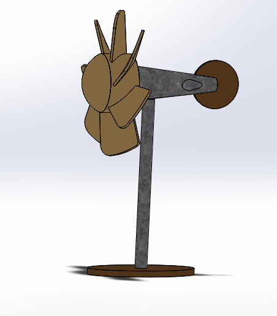
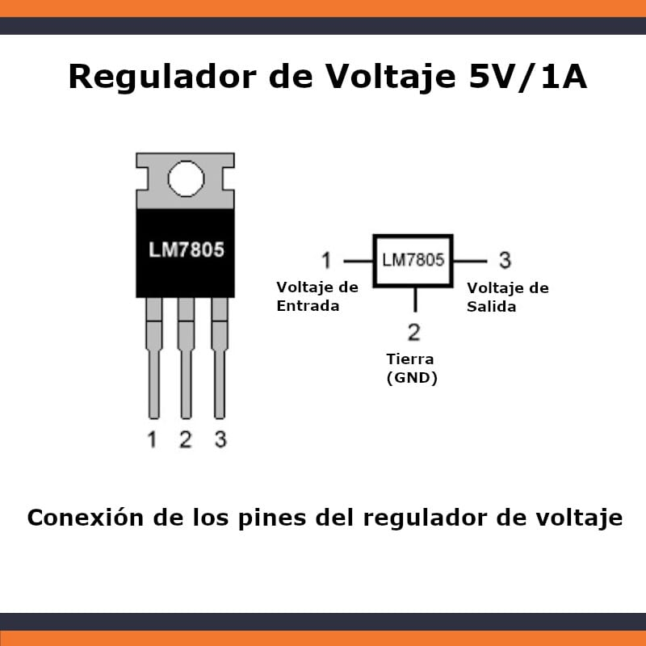
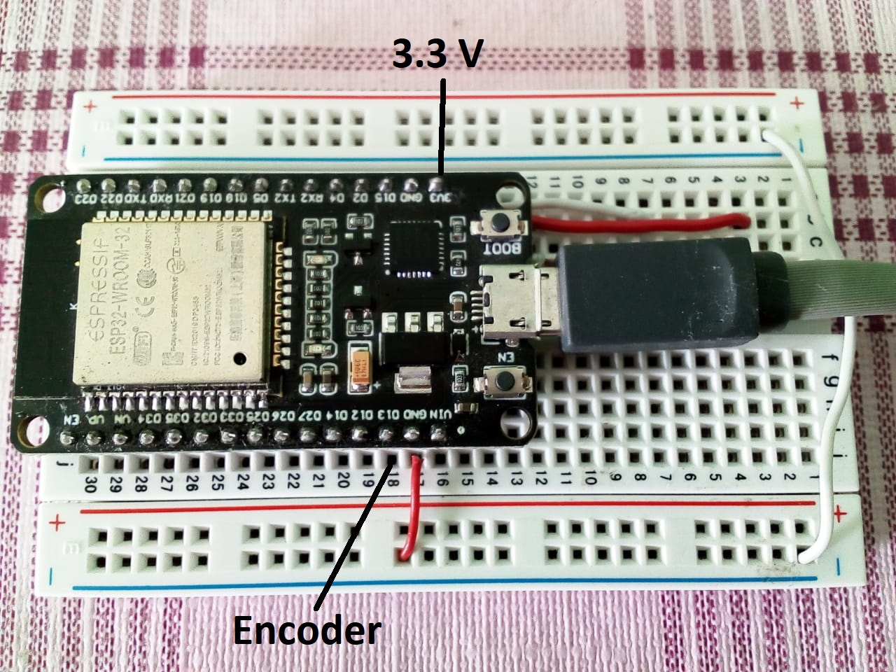
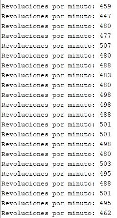
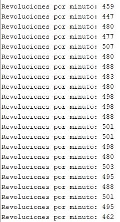
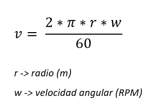
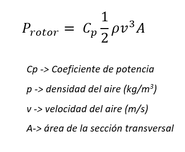
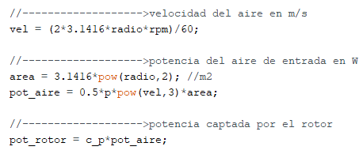

Diseñar el aerogenerador en SolidWorks
Es importante diseñar y simular la superficie alar propuesta para conocer el comportamiento del flujo de aire a través de las aspas antes de realizar las pruebas experimentales.
Regular el voltaje
Las salidas del motor se conectan al pin 1 del regulador de voltaje, el cual corresponde al voltaje de entrada producido por el movimiento de las aspas del rotor además, el pin 3, que es el voltaje regulado a 5 V, se conecta al puerto USB. Es importante medir el voltaje del aerogenerador y el voltaje regulado antes de conectar el celular.
Medir los RPM del aerogenerador s
Se debe conectar el encoder al módulo ESP32 para medir las revoluciones por minuto (RPM), es decir, la velocidad angular del rotor. El encoder se puede alimentar con el pin de 3.3 V del ESP32.
Después se debe realizar un programa en Arduino para leer el encoder y calcular las RPM de acuerdo al número de interrupciones.
 

Calcular los parámetros de rendimiento
Con las revoluciones por minuto (RPM) es posible calcular la velocidad del viento:
En consecuencia, es posible obtener la potencia del aire de entrada:
Donde p es la densidad de aire (1.23 kg/m3), A es el área de la sección transversal y v es la velocidad del viento.
Dividiendo la potencia eléctrica y la potencia del aire de entrada, es posible estimar el coeficiente de potencia (Cp) del aerogenerador, que para nuestro prototipo corresponde un valor de 0.4
Finalmente, para conocer la potencia captada por el rotor, se debe multiplicar la potencia del aire de entrada por el Cp.
Con estos valores es posible estimar la eficiencia del aerogenerador, que para nuestro prototipo es del 40 %.
Nota:
Según el teorema de Betz, la energía máxima que podrá captarse del viento para que el rendimiento sea máximo es del 59%
Estas fórmulas se agregan al código del encoder, de la siguiente forma:
Crear interfaz web para acceder a los parámetros desde el celular
El NodeMCU ESP32 es un microcontrolador con módulos integrados de Wifi y Bluetooth. El transmisor WiFi y la antena incorporada en el microcontrolador permite la conexión a Internet. Gracias a esto, es posible crear un servidor que aloja una interfaz web para controlar el microcontrolador ESP32 de forma remota, y de esta forma, observar los parámetros de rendimiento en tiempo real. Para ello es necesario usar la librería Wifi.h, inicializar el servidor, ingresar el ssid y la contraseña de nuestra red además de diseñar la página web en HTML.
Home